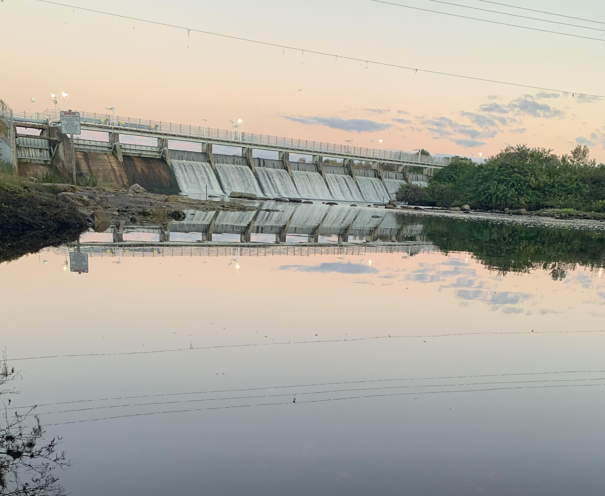

In the Mind of James
A diary where, for each entry, I recount something I am: thankful for, grateful of, happy about, etc. - anything that brings me joy.

1/12/2021
As my spring semester trudges from rest, I find myself still at home due to COVID. If you were to tell me this a month ago, I'd be wholly disheartened. But as speculation becomes reality, I am much more grateful of my parents' presence. Eating at the dinner table and asking something as simple as how their day has been, I realized just how glad they're still here with me. Let's stay together by Al Green encapsulates my feelings for them perfectly.